What is Evidence Synthesis?
Evidence Synthesis is the process of bringing together all available information relevant to a research question, to inform decisions and policy. It moves beyond simply summarizing single studies to generating robust, generalizable findings. This rigorous process involves systematic searching, critical appraisal, data extraction, and meta-analysis.
Directory Policy: This directory lists only Open Source, non-proprietary academic tools. The complete source code must be publicly available (e.g., on GitHub, GitLab, or similar platforms), allowing anyone to inspect, reuse, and build upon it. Proprietary or closed-source software (EndNote, Covidence, DistillerSR, NVivo, Stata, SAS, Rayyan, etc.) is strictly excluded.

Why Open Source? We prioritize open-source tools to ensure full transparency and reproducibility in research. Open-source software allows researchers to inspect the underlying code, avoiding reliance on proprietary "black box" algorithms. Furthermore, it fosters a collaborative ecosystem where researchers can directly fork, extend, and improve existing tools, accelerating innovation while ensuring long-term accessibility and independence from commercial vendors.
These range from AI-assisted screening platforms that help find relevant studies amidst thousands of papers, to Risk of Bias (RoB) visualization tools, to smaller scripts and libraries that automate specific tasks in the synthesis pipeline.
This directory specifically highlights 152 open source non properietary tools / softwares till the year 2026.
Search & Strategy Development

CitationChaser
Automates backward and forward citation chasing using Lens.org API to find cited and citing papers for systematic reviews.

litsearchr
An R package and Shiny app that uses text mining to identify important search terms, builds Boolean strings across databases, and test search performance.

OpenAlex
A fully open catalog of the global research system providing an API to retrieve millions of works, authors, and concepts for searching.
R: RISmed
R package for accessing data and downloading records from PubMed and NCBI databases programmatically.
R: easyPubMed
A wrapper for the NCBI Entrez API allowing users to query PubMed and parse XML results into R data frames.
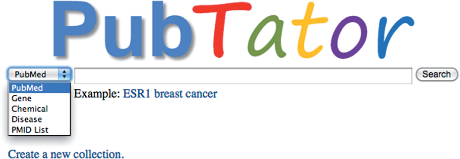
PubTator 3.0
A web-based semantic annotation system for biomedical literature, automatically recognizing concepts like genes, diseases, and chemicals.

Unpaywall
An open-source browser extension and database that instantly finds free, legal full-text PDFs for your scholarly references.
R: openalex
An R interface to the OpenAlex API for accessing bibliographic data and concepts programmatically.
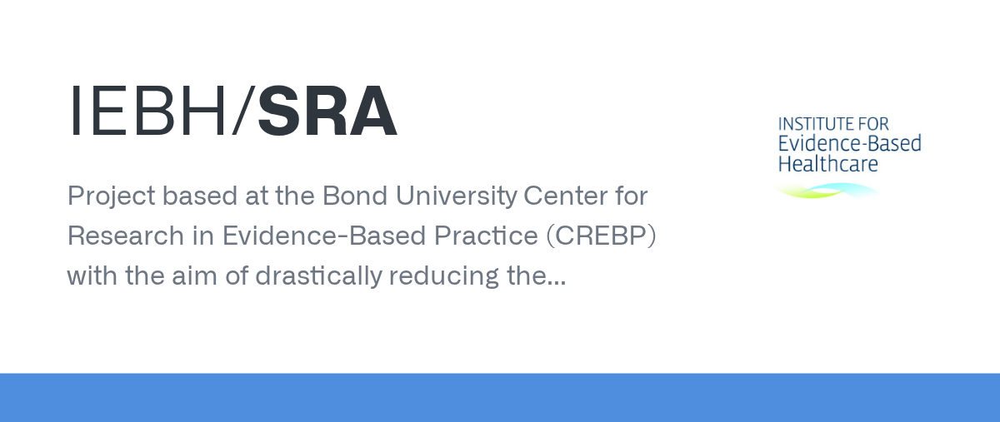
Systematic Review Accelerator 2 (SRA2)
The core Systematic Review Accelerator (SRA) application. This is a key open-source platform for evidence synthesis.
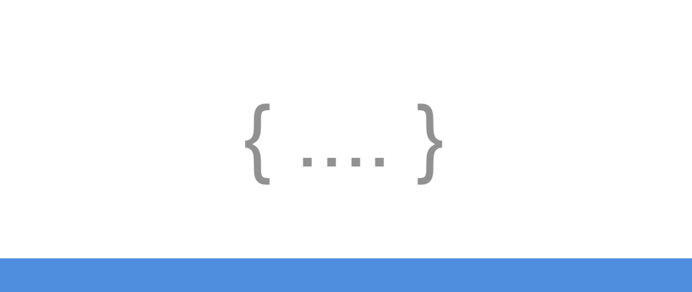
TERA Explorer
A simple TERA project viewer and editor. Confirms "TERA" as an active project name within the suite.
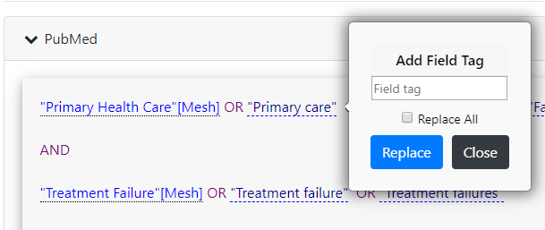
SRA Polyglot
A tool to convert between different medical database search formats, directly relevant to search strategy development.
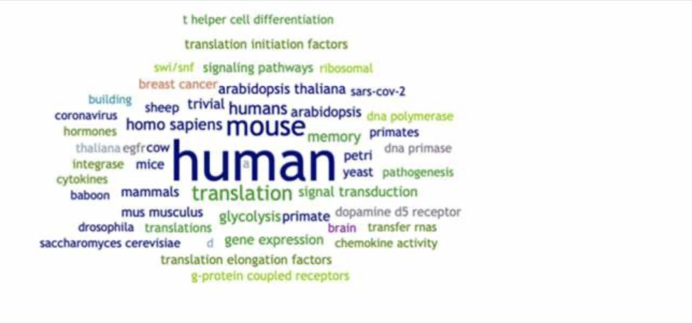
BioTextQuest v2.0
An open-source web portal for biomedical literature mining. It clusters PubMed search results to facilitate concept discovery and identify associations between genes, diseases, chemicals, and other entities.
Kindred
A Python library for supervised relation extraction from biomedical text. It identifies structured relationships (e.g., gene-disease, drug-treatment) from scientific literature using machine learning.
Reference Management & Deduplication

Zotero
Free, open-source reference manager that helps collect, organize, cite, and share research sources. Highly extensible with plugins.
JabRef
Open-source bibliography reference manager. The native file format used is BibTeX, standard for LaTeX.
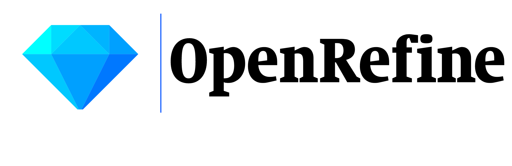
OpenRefine
A power tool for working with messy data, cleaning it, transforming it, and extending it with web services.
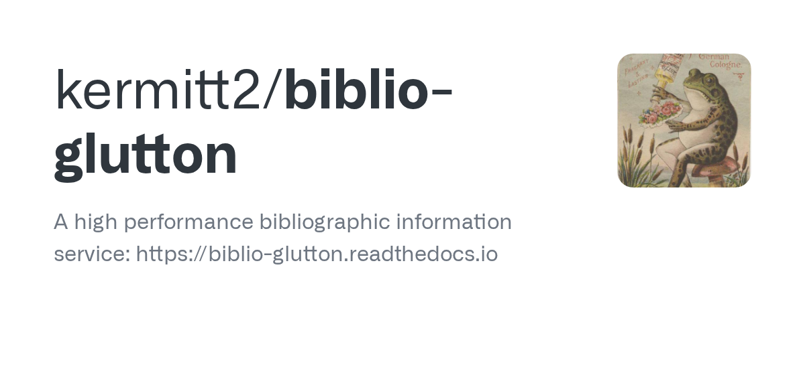
BiblioGlutton
An open-source browser extension that recommends papers and automatically adds references to your library.
Docear
An open-source academic literature suite based on mind mapping, helping to organize PDFs and annotations.
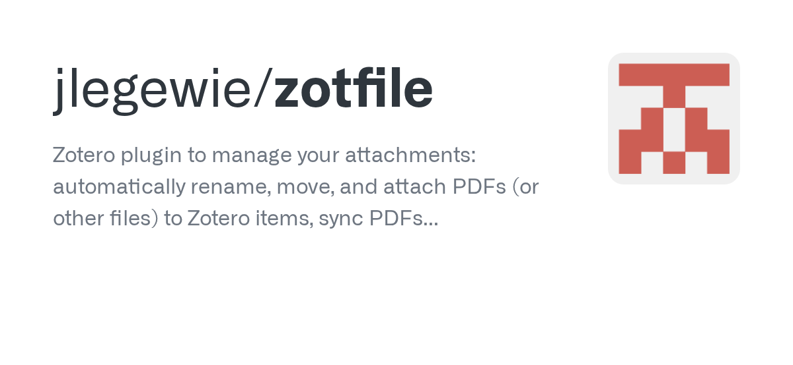
ZotFile
An open-source Zotero plugin to automatically rename and attach PDFs to your references.
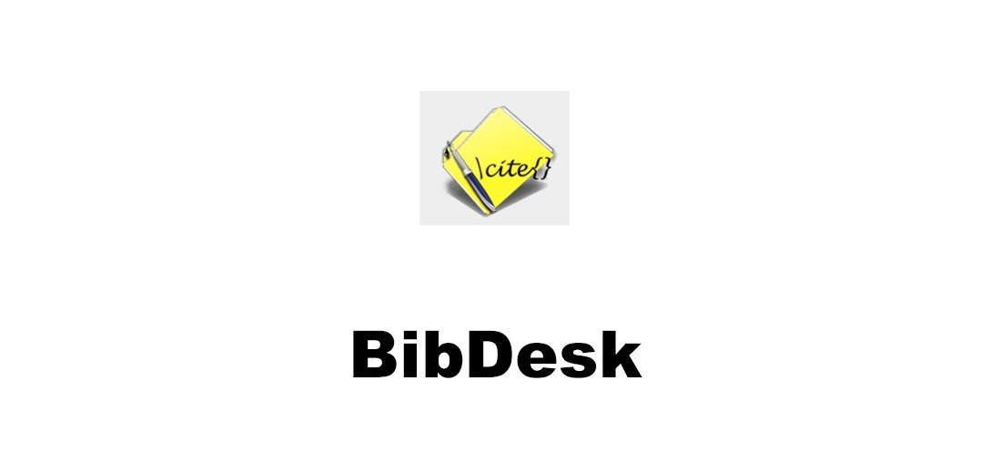
BibDesk
An open-source graphical BibTeX editor and bibliography manager for macOS.
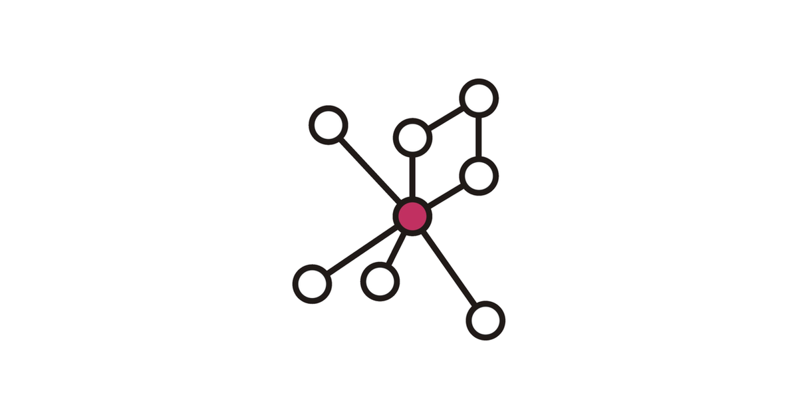
BibSonomy
An open-source social bookmarking and publication sharing platform for researchers.

Zotero Better BibTeX
A plugin for Zotero that automatically generates BibTeX keys and exports.
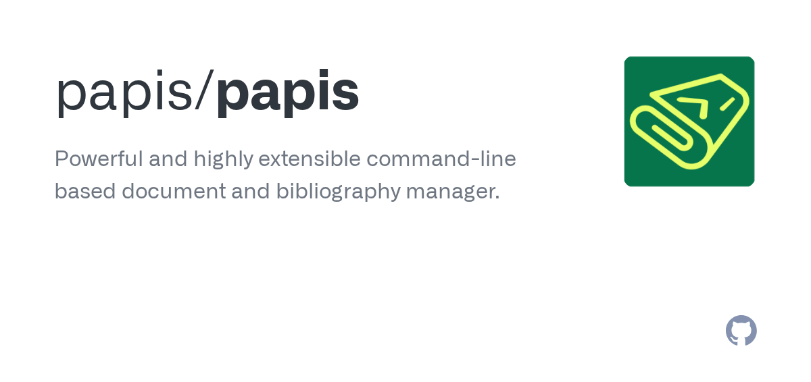
Papis
A powerful and highly extensible document and bibliography management system / library.
Manubot
Open-source software for creating scholarly manuscripts via YAML citations. Generates citations and formats using pandoc/citeproc.
Dedupe
A Python library for fast, scalable fuzzy matching and deduplication of records (e.g., citations).
Screening & Selection
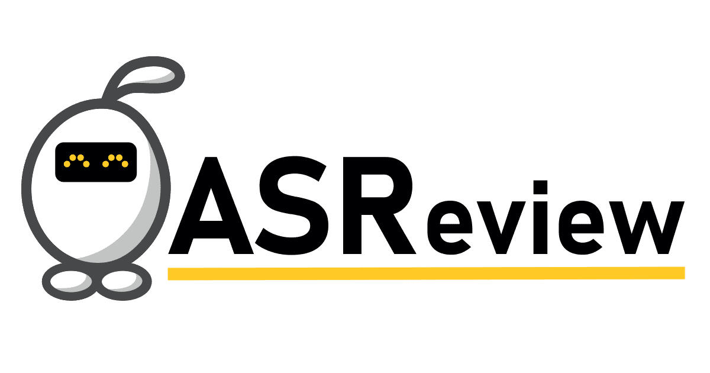
ASReview
An open-source machine learning tool for systematic reviews that assists researchers in screening papers interactively and efficiently.

ReviewAid
An open-source AI full text screening & data extraction assistant designed to speed up systematic review process.
Abstrackr
A free, open-source web application designed to help researchers screen citations for systematic reviews using machine learning.
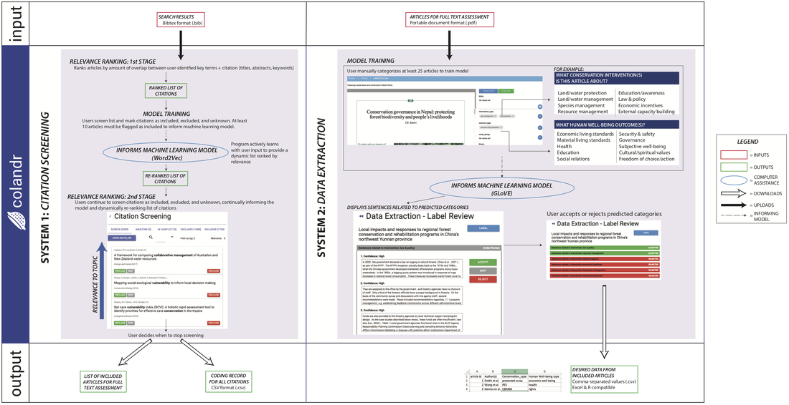
Colandr
An open-source web-based tool for systematic review workflows, from deduplication and screening to extraction and manuscript drafting.
R: revtools
A toolkit for systematic reviews in R, facilitating article screening via visual inspection and topic modeling of search results.
R: metagear
R package that provides tools for article deduplication, downloading PDFs, and interactive screening.
Data Extraction & Utilities

RobotReviewer
An open-source system that automates risk-of-bias assessment and data extraction for randomized controlled trials using NLP.
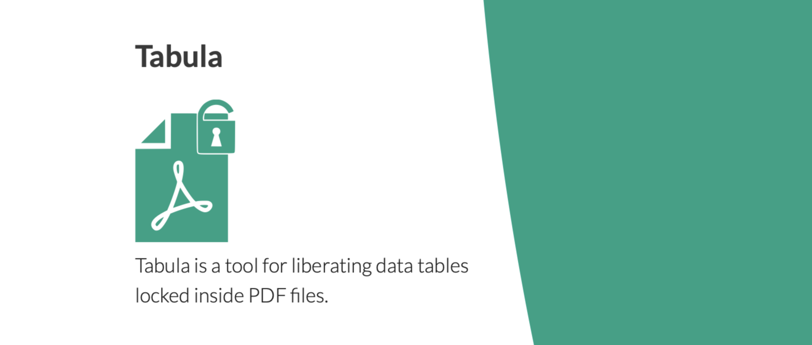
Tabula
A tool for liberating data tables locked inside PDF files. It extracts tables into CSV or Excel formats to facilitate data extraction.
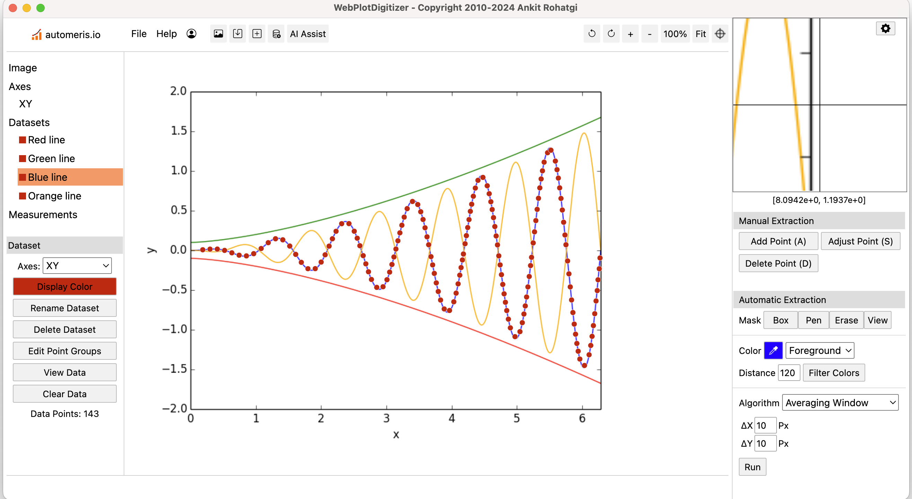
WebPlotDigitizer
An open-source, semi-automated tool to extract numeric data from plot images. It is useful for extracting data from graphs for meta-analysis.
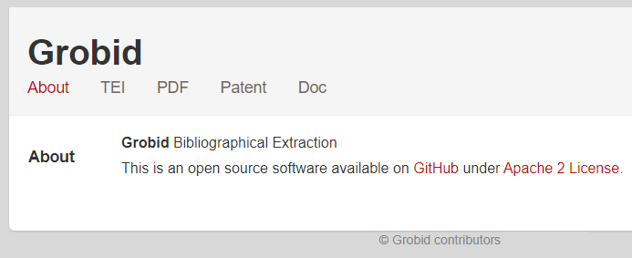
GROBID
A machine learning library and tool for extracting structured information (bibliographic data, tables, headers) from scientific documents in PDF format.
OCRmyPDF
A command line tool that adds an OCR text layer to scanned PDF files, making them searchable and selectable for data extraction.
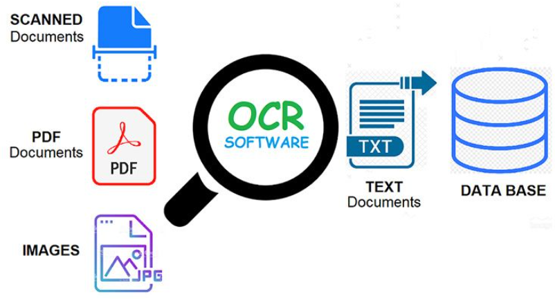
Tesseract OCR
The most popular open-source Optical Character Recognition (OCR) engine, used to extract text from images and scanned PDFs.
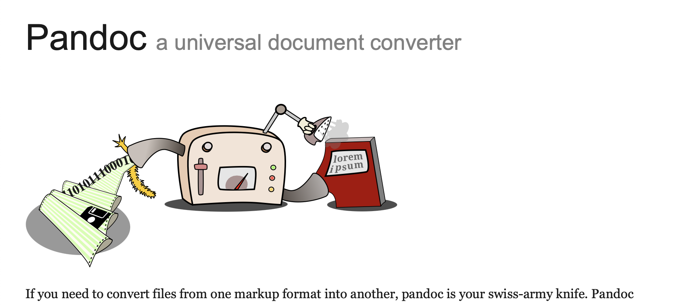
Pandoc
A universal document converter that turns files from one markup format into another (e.g., Word to Markdown), useful for document preparation.
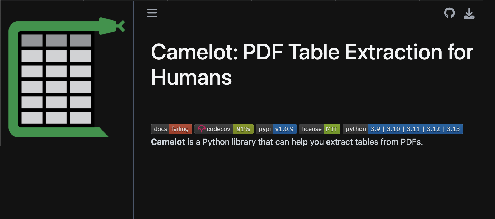
Camelot
A Python library that helps you extract tables from PDFs, providing a command line interface and robust PDF table extraction capabilities.
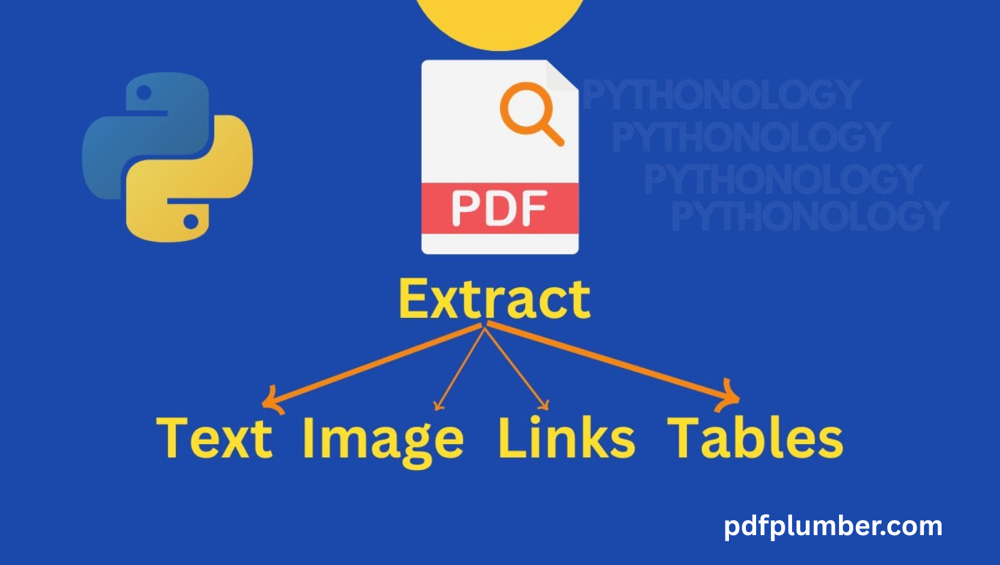
PDFPlumber
A Python library to reliably extract text and tables from PDFs, even those with complex layouts, aiding in data extraction.
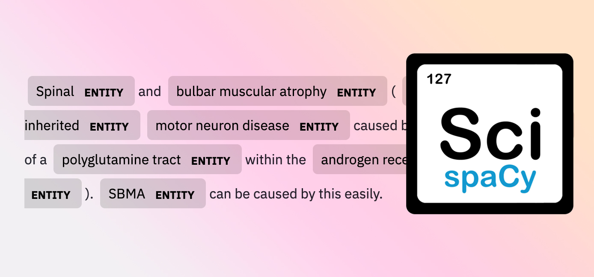
SciSpaCy
A Python library containing spaCy models for processing biomedical, scientific, or clinical text, ideal for extraction and NLP tasks.
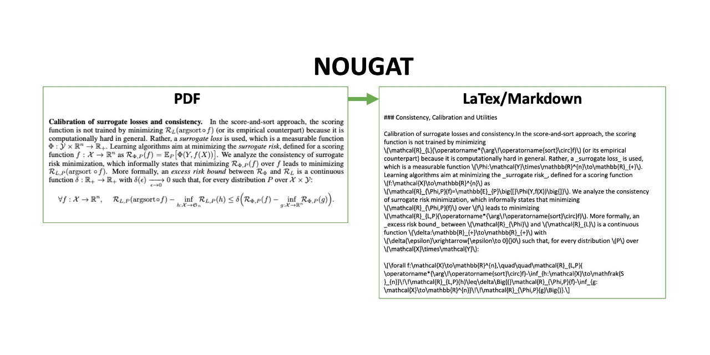
Nougat
An open-source neural network model that converts scientific PDFs into Markdown, facilitating text and table extraction.
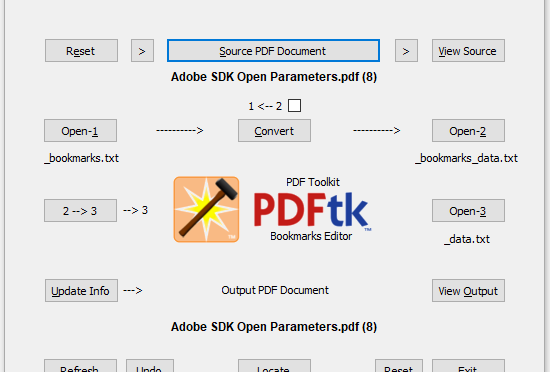
PDFtk (PDF Toolkit)
A tool for performing everyday tasks on PDF files, such as splitting, merging, and rotating pages, without editing the content.
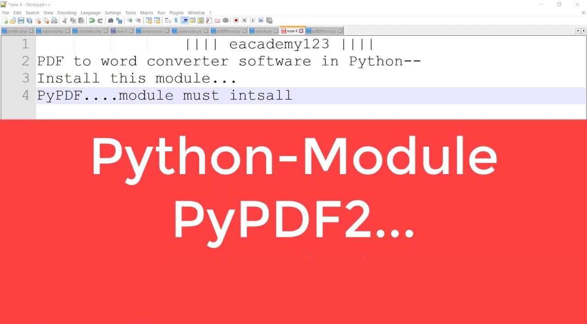
PyPDF2
A pure-Python library built as a PDF toolkit, capable of extracting document information, splitting, merging, and cropping pages.
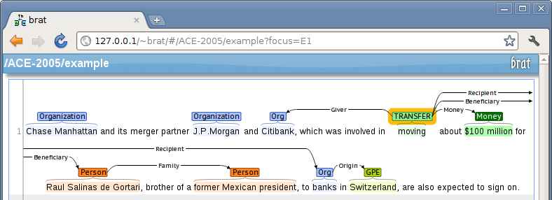
NLP Annotation
An open-source web-based tool for creating structured annotations on text, supporting entity, relation, and event labeling for NLP and biomedical text analysis..
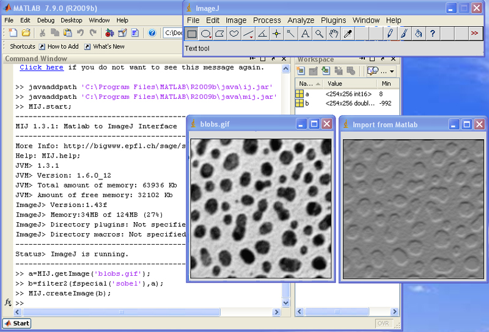
ImageJ
A Java-based image processing program widely used to extract data points from raster plots and images.
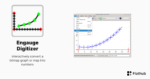
Engauge Digitizer
Open source software for converting image files back to numbers, extracting data from graph images for analysis.
Recogito
An open-source web-based tool for collaborative document annotation and text mapping.
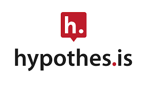
Hypothes.is
An open-source layer over the web for annotating documents, web pages, and PDFs collaboratively.
Risk of Bias & Visualization Tools

Critiplot
A specialized open-source tool for generating traffic light plots for MMAT, ROBIS, GRADE, NOS, JBI Case Series/report assessments.

robvis
An R package and web app for generating risk-of-bias assessment plots. It supports RoB2, ROBINS-I, QUADAS-2, and more.

NOS-TLPlot
Open-source tool designed to visualize Newcastle-Ottawa Scale (NOS) assessments using traffic light plots.
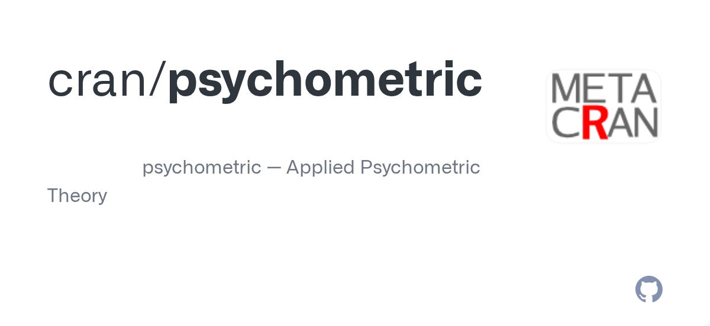
psychometric
R package for applied psychometric theory, offering functions for reliability analysis, validity, and item analysis.

metaviz
An R package for creating flexible visualizations for meta-analytic data, including rainforest plots and subgroup visualizations.
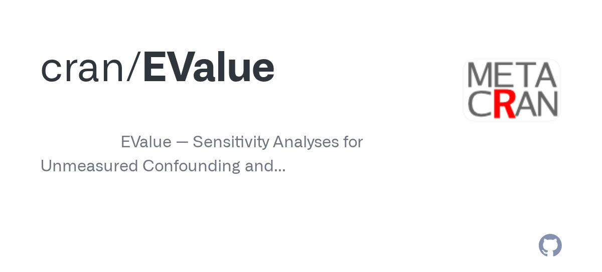
R: EValue
R package to calculate E-values, metrics to assess robustness to unmeasured confounding in meta-analyses. It provides functions for sensitivity analysis of unmeasured confounding for various effect measures including risk ratios and odds ratios.
psychmeta
R package for conducting psychometric meta-analyses, providing tools for artifact correction, data cleaning, and aggregation of validity coefficients.
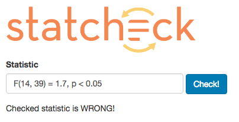
statcheck
statcheck is an R package that extracts statistical results from text, PDF, or HTML and checks whether reported p-values are consistent with the given test statistics and degrees of freedom. It is used to detect statistical reporting inconsistencies in primary studies and meta-analyses.
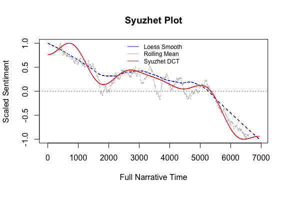
R: syuzhet
Syuzhet is an R package designed to extract sentiment and sentiment-derived plot arcs from text using various sentiment dictionaries. It facilitates the analysis of narrative trajectories and emotional shifts within textual data.
Statistical Analysis & Meta-Analysis
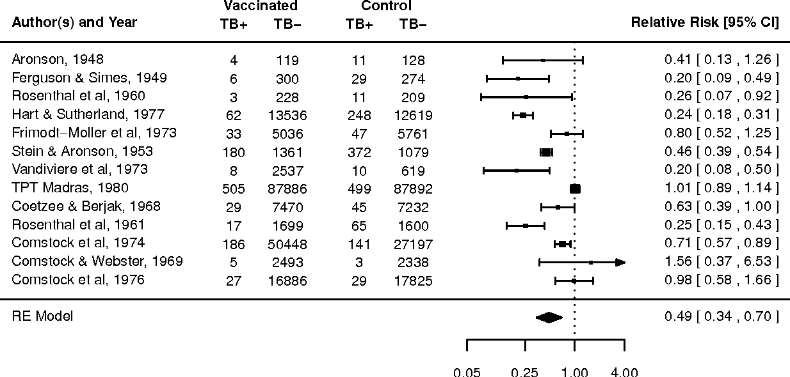
R: metafor
A comprehensive R package for conducting meta-analyses, providing functions for fixed, random, and mixed-effects models, meta-regression, and multilevel models.
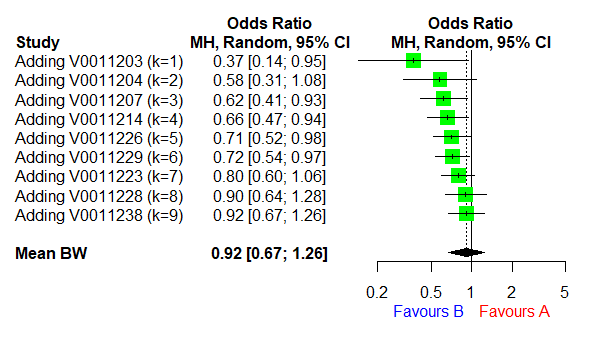
R: meta
A user-friendly R package for standard meta-analysis in clinical research, supporting binary, continuous, and diagnostic test accuracy data with various visualization tools.
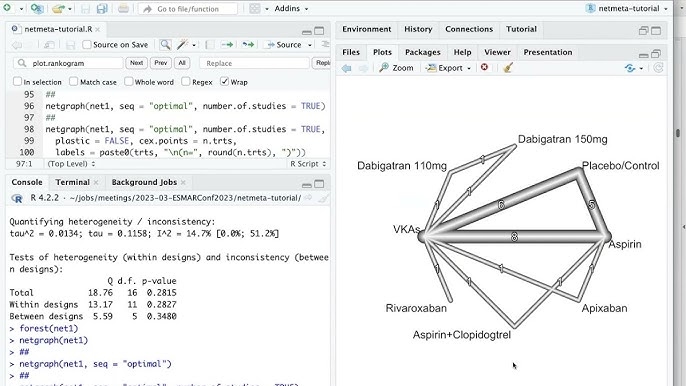
R: netmeta
An R package for frequentist network meta-analysis using a graph-theoretical approach to estimate treatment effects and evaluate consistency within networks.
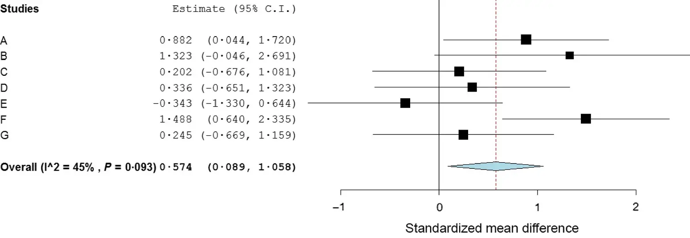
OpenMEE
An open-source, cross-platform software for meta-analysis in ecology and evolution, utilizing a graphical interface backed by the 'metafor' R engine.
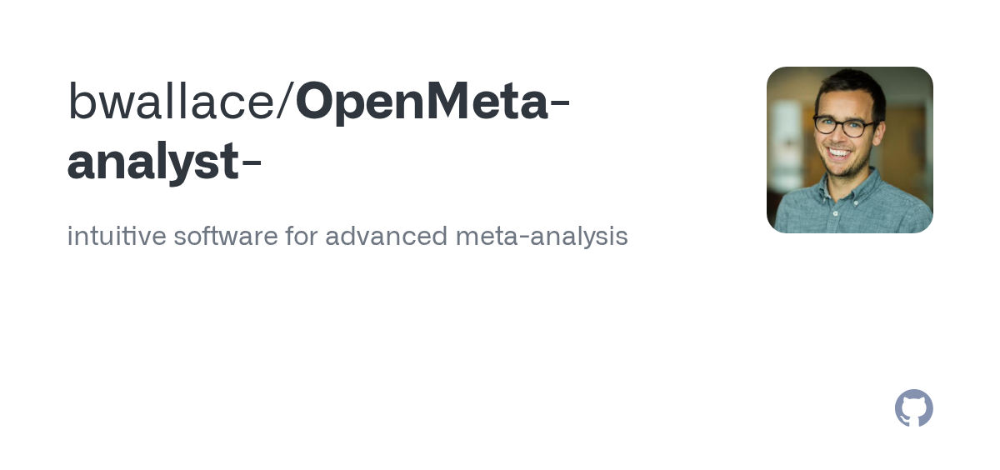
OpenMeta[Analyst]
A user-friendly, open-source software for performing meta-analysis and meta-regression using a graphical interface.
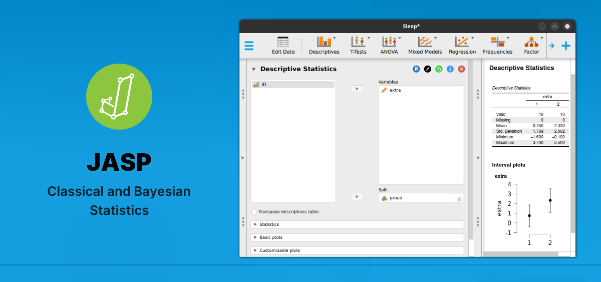
JASP
Free and open-source software for statistical analysis, featuring a graphical interface with a dedicated module for conducting meta-analysis.
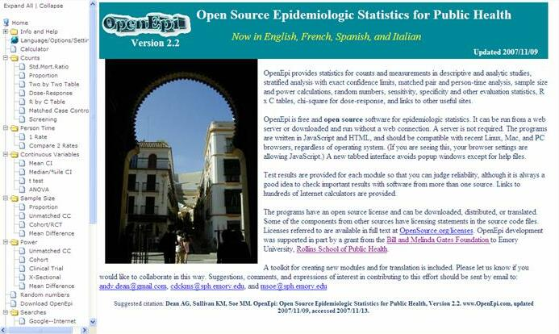
OpenEpi
A web-based, open-source set of epidemiologic calculators designed for statistics in descriptive and analytic studies. It provides tools for stratified analysis, sample size calculations, and R x C tables, which are useful for data extraction and statistical verification in reviews.

PyMC
A Python library for Bayesian statistical modeling and probabilistic machine learning focusing on Markov chain Monte Carlo (MCMC) algorithms. It is widely used in evidence synthesis to perform Bayesian network meta-analysis and complex hierarchical modeling.
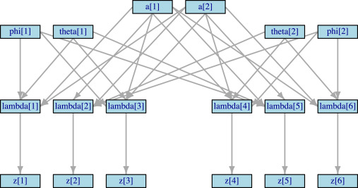
JAGS
A program for analysis of Bayesian hierarchical models using Markov Chain Monte Carlo (MCMC) simulation. It provides a flexible platform for performing Bayesian network meta-analysis and other complex statistical tasks in evidence synthesis.
Stan
A state-of-the-art platform for statistical modeling and high-performance computation using Hamiltonian Monte Carlo (HMC). It is widely utilized in evidence synthesis for conducting Bayesian meta-analyses and network meta-analyses with complex models.
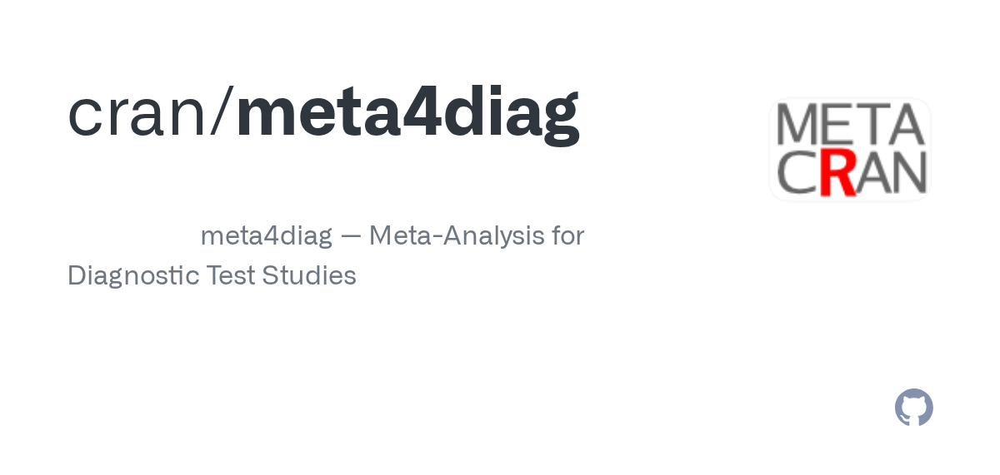
R: meta4diag
An R package specifically designed for the Bayesian meta-analysis of diagnostic test accuracy studies. It handles complex data structures, including correlated sensitivities and specificities, using Markov chain Monte Carlo simulation.
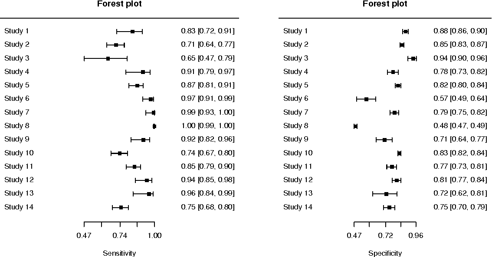
R: mada
An R package that provides functions for the meta-analysis of diagnostic accuracy data. It supports various statistical models for pooling sensitivity and specificity and offers extensive graphical capabilities for result visualization.
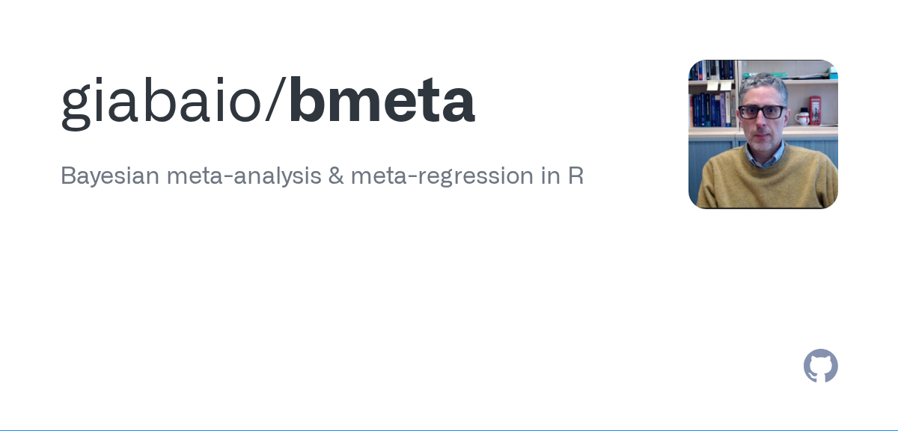
R: bmeta
An R package designed for conducting Bayesian meta-analysis and meta-regression using JAGS. It provides a flexible framework for various statistical models and generates graphical outputs for evidence synthesis.
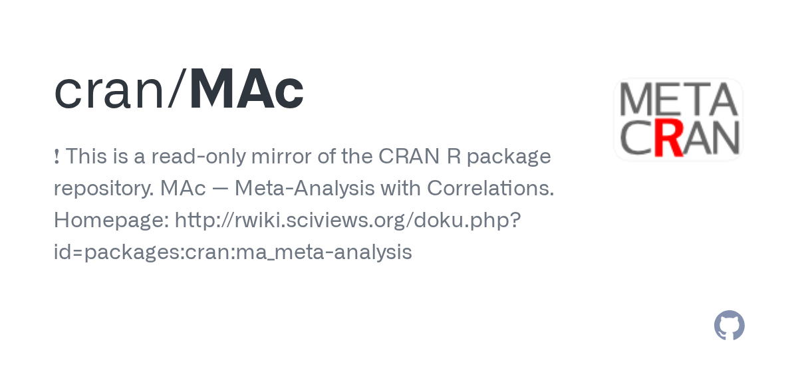
R: MAc
An R package for the meta-analysis of correlation matrices, particularly useful in psychometrics and social sciences. It implements structural equation modeling approaches to synthesize correlation data accurately.
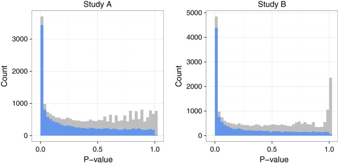
R: metaRNAseq
An R package for the meta-analysis of RNA-Seq count data, providing standardization for cross-study comparison of differential gene expression. It implements methods to combine effect sizes and p-values across multiple high-throughput sequencing studies.
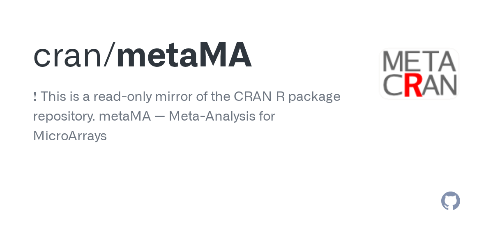
R: metaMA
An R package dedicated to the meta-analysis of microarray data, combining p-values from multiple studies to identify differentially expressed genes. It handles cross-study variability and platform differences to provide robust gene lists.
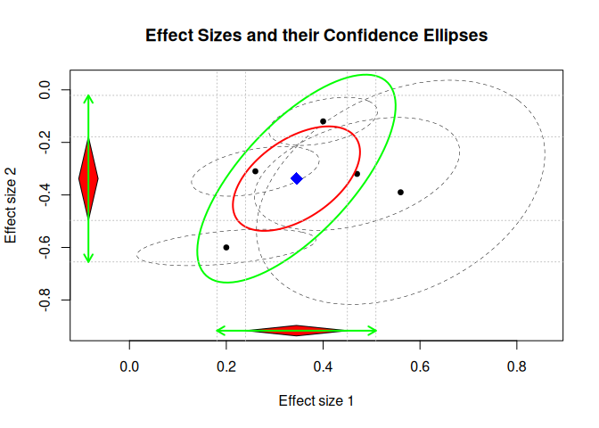
R: metaSEM
An R package for conducting meta-analytic structural equation modeling (MASEM) to synthesize correlation or covariance matrices across studies. It allows researchers to fit structural equation models on pooled data to test theoretical models.
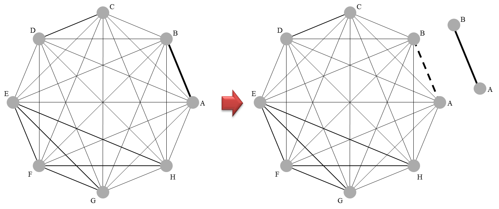
R: gemtc
An R package for network meta-analysis using a Bayesian graphical model framework, primarily interfacing with JAGS. It automates the data conversion, model fitting, and generation of network plots and rank probabilities.
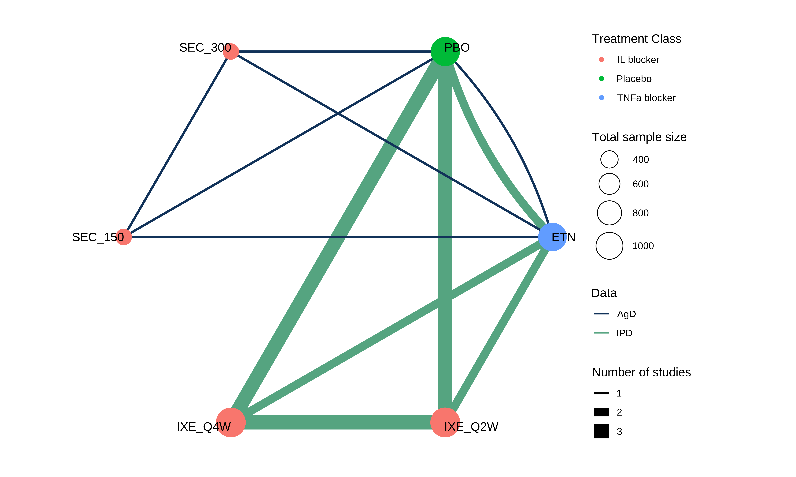
R: multinma
An R package for network meta-analysis of randomized trials and observational studies, enabling the synthesis of multiple outcomes and treatments simultaneously. It utilizes Stan for Bayesian inference to fit complex hierarchical models.

R: dosresmeta
An R package for performing dose-response meta-analysis of aggregated data using a one-stage approach. It allows for the modeling of non-linear relationships between exposure levels and outcome effects.
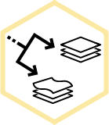
R: MetaForest
An R package that applies Random Forests to meta-analytic data to explore heterogeneity and model complex, non-linear relationships. It helps identify influential covariates and interactions without strict linearity assumptions.
R: Bayesmeta
An R package for conducting Bayesian random-effects meta-analysis with a focus on robust parameter estimation and predictive inference. It provides functions for computing posterior distributions and generating plots.
R: metapower
An R package for power analysis in meta-analysis, helping researchers calculate the required number of studies or sample size to detect an effect. It supports various meta-analytic models and effect sizes.
R: metaumbrella
An R package specifically designed to perform "Umbrella Reviews," which are systematic reviews of multiple meta-analyses. It provides tools for classifying evidence, assessing bias, and visualizing results from large-scale evidence synthesis projects.
R: pimeta
An R package for calculating prediction intervals in meta-analysis, offering insights into the range of true effects in future studies. It implements various parametric and non-parametric methods for prediction interval estimation.
R: metaplus
An R package for random-effects meta-analysis that uses heavy-tailed distributions, such as the t-distribution, to handle outliers effectively. It provides robust estimates of the overall effect and between-study heterogeneity.
R: robustmeta
An R package that performs robust statistical inference in meta-analysis using methods like the RD (Robust DerSimonian-Laird) and REMLC estimators. It protects against violations of model assumptions, such as publication bias or small-study effects.
R: metamedian
An R package for performing median-based meta-analysis, providing robust alternatives to mean-based aggregation methods. It is particularly useful when dealing with skewed distributions or data where means are not representative.
R: metaLik
An R package that provides likelihood-based methods for conducting meta-analysis. It is particularly useful for diagnostic accuracy studies and offers robust estimation techniques.
R: brms
An interface to Stan for Bayesian regression models that allows users to fit complex multilevel models using R formula syntax. It is extensively used for performing Bayesian meta-analysis and network meta-analysis with flexible model specifications.
R: R2OpenBUGS
An R package that acts as an interface to the OpenBUGS software, enabling users to run Bayesian models directly from the R console. It facilitates the workflow for Bayesian meta-analysis by linking R data management with OpenBUGS sampling.
BUGSnet
A web-based platform for conducting Network Meta-Analysis (NMA) using OpenBUGS, designed to be user-friendly for researchers without programming expertise. It provides visualization tools for network geometry and generates publication-ready plots and tables.
R: robumeta
An R package for conducting robust variance estimation (RVE) in meta-analysis, which is essential for handling dependent effect sizes. It implements models that adjust for correlated errors often found in hierarchical or longitudinal data structures.
R: dmetar
A comprehensive R package to assist in conducting meta-analyses, providing helper functions for data preparation, effect size calculation, and bias assessment. It serves as a companion to the guide 'Doing Meta-Analysis in R'.
MAvis
An interactive Shiny application designed for visualizing meta-analysis data, including forest plots, funnel plots, and L'Abbe plots. It allows users to upload data and generate standard publication-quality plots dynamically.
ShinyMeta
A Shiny web application that provides a graphical user interface for performing meta-analysis and meta-regression using the 'metafor' package as a computational backend. It enables users to conduct analyses without writing R code.
compute.es
R package for computing effect sizes (d, g, r, log odds ratio) and their variances from various test statistics. It facilitates the conversion of reported statistics into formats required for meta-analysis.
Visualization & Evidence Mapping

VOSviewer
A software tool for constructing and visualizing bibliometric networks. Useful for evidence mapping and co-citation analysis.

PRISMA 2020 (Flow Diagram)
The official PRISMA 2020 Flow Diagram Generator (Shiny App) automatically creates a correctly formatted PRISMA flow diagram after you input your study screening numbers.
RawGraphs
An open-source platform built to create custom vector-based visualizations on top of the D3.js library. It allows users to define layouts, mappings, and visual styles without coding, serving as a bridge between spreadsheets and vector graphics editors for data analysis.
EviAtlas
A tool for creating systematic map visualizations to organize and display the distribution of evidence in a specific field. It connects to an Excel database to generate heatmaps and other graphical representations of evidence.

bibliometrix
A comprehensive tool for quantitative research in bibliometrics and scientometrics, providing all the main tools for bibliometric analysis. It includes an interactive web application called biblioshiny for performing science mapping analysis.
Gephi
An open-source platform for visualizing and exploring large networks and graphs. It is widely used in evidence synthesis for network analysis, science mapping, and exploring complex data structures.
Cytoscape
An open source software platform for visualizing complex networks and integrating these with any type of attribute data. While often used in bioinformatics, it is applicable for visualizing citation networks and evidence connections in systematic reviews.
QGIS
A free and open-source Geographic Information System (GIS) that supports creating, editing, visualizing, analyzing, and publishing geospatial information. It is a critical tool for evidence synthesis projects involving systematic mapping and spatial analysis.
R: wordcloud
An R package that provides a simple interface for creating word clouds. It is useful for visualizing text data frequency, aiding in the analysis of keywords and terms during the screening or extraction phases.
R: ggraph
An R package extending the grammar of graphics to graph data, built on top of ggplot2. It allows for the flexible creation of network visualizations, which can be used to map citation relationships in evidence synthesis.
R: ggplot2
The foundational R package for declaratively creating graphics based on The Grammar of Graphics. It is widely used to produce complex visualizations such as forest plots and funnel plots for meta-analysis.
R: patchwork
An R package that provides a simple syntax for combining separate ggplot2 graphics into the same figure. It is particularly useful for creating multi-panel visualizations, such as side-by-side forest plots or diagnostic plots in meta-analysis.
R: cowplot
An R package that provides themes and utilities to create publication-ready figures using ggplot2. It helps combine multiple plots into a composite figure and add annotations, streamlining the production of complex charts for systematic reviews.
Graphviz
Open-source graph visualization software that represents structural information as diagrams of abstract graphs and networks. It is useful for generating flow diagrams (like PRISMA flows) and visualizing citation networks in evidence synthesis.
Automation, Libraries & Scripting
Carrot2
An open-source search results clustering engine that automatically organizes search results into thematic categories. It helps researchers refine search queries and identify relevant literature clusters by structuring unstructured data.
Sci2
A modular toolset designed for the study of science, enabling temporal, geospatial, and topological analyses of scholarly datasets. It supports science mapping and bibliometric analysis to visualize the structure and evolution of scientific fields.
PyMedTermino
A Python library designed to manipulate the MeSH (Medical Subject Headings) thesaurus for biomedical search strategies. It facilitates the programmatic creation and management of complex search strings for literature databases.
BioEntrez
A module within the Biopython library that provides a programmatic interface to the NCBI Entrez utilities. It is essential for automating searches and retrieving data from PubMed and other NCBI databases.
R: RTextTools
An R package for automatic text classification that creates machine learning models for supervised learning. It is useful for screening automation, allowing researchers to train classifiers to prioritize relevant documents.
ArviZ
A Python library for exploratory analysis of Bayesian models, providing backend-agnostic plotting and diagnostics. It supports the visualization and interpretation of results from Bayesian meta-analyses conducted with PyMC, Stan, or other probabilistic programming frameworks.
R: forestplot
An R package specifically designed for creating forest plots, which are standard visualizations in meta-analysis for displaying effect sizes and confidence intervals. It provides a flexible syntax to generate summaries and confidence intervals from tabular data.
R: clubSandwich
An R package providing cluster-robust variance estimators for models involving dependent effect sizes, such as multilevel or network meta-analysis. It is essential for ensuring valid statistical inference when data is correlated.
R: MICE
Multivariate Imputation by Chained Equations (MICE) is an R package used for handling missing data through multiple imputation. It allows researchers to perform robust statistical analyses on incomplete datasets commonly encountered in evidence synthesis.
PSPP
A free, open-source replacement for the proprietary program SPSS, offering a similar interface and statistical capabilities. It performs descriptive statistics and basic hypothesis testing, useful for analyzing extracted data in systematic reviews.
Gretl
GNU Regression, Econometrics and Time-series Library is an open-source package for econometric analysis. It supports a wide range of estimators and is useful for complex statistical modeling and time-series analysis within research projects.

OSF (Open Science Framework)
An open-source project management tool supporting the full research lifecycle, from preregistration to data sharing and collaboration. It helps research teams manage workflows, document decisions, and archive materials for systematic reviews.
spacy
Industrial-strength Natural Language Processing (NLP) library for Python, designed specifically for production use. It provides pre-trained models for named entity recognition, part-of-speech tagging, and dependency parsing, useful for data extraction and screening automation.
R: tidytext
An R package for text mining using 'tidy data' principles, allowing seamless integration with the 'tidyverse' ecosystem. It is essential for performing sentiment analysis, term frequency analysis, and visualizing text data during the screening process.
R: quanteda
A comprehensive R package for the quantitative analysis of textual data, speeding up the workflow for creating and managing corpora. It supports various text analysis techniques including scaling and feature extraction relevant to systematic review screening.
R: topicmodels
An R package that provides an interface to the C code for Latent Dirichlet Allocation (LDA) and Correlated Topic Models (CTM). It is useful for identifying latent topics and themes within large sets of abstracts or full-text documents.
R: snowballC
An R package for text stemming, which reduces words to their root form to improve matching during text analysis. It is a fundamental tool for preprocessing text data in search term development and screening.
R: udpipe
An R package for fast text tokenization, parts of speech tagging, lemmatization, and dependency parsing. It provides pre-trained models for multiple languages, facilitating text preprocessing for systematic reviews.
Citation.js
An open-source JavaScript library for formatting citations in CSL-JSON and converting them to various bibliographic styles. It is useful for developers building web-based tools that require citation processing.
scikit-learn
Python's premier machine learning library, featuring simple and efficient tools for predictive data analysis and mining. It is widely used to build custom classification models to automate the screening process in systematic reviews.
transformers
A library by Hugging Face providing thousands of pre-trained models for text, image, and audio tasks. It enables researchers to use state-of-the-art NLP models like BERT for advanced screening and data extraction.
R: R Markdown
A framework for creating dynamic documents that turn analysis code into fully reproducible reports. It is essential for transparently documenting the data extraction and analysis phases of evidence synthesis.
R: bookdown
An R package that allows authors to write books and long-form reports using R Markdown. It facilitates the creation of comprehensive systematic reviews and reproducible research documents.
PDFMiner.six
A Python library for extracting information from PDF documents, including text, images, and metadata. It is essential for parsing full-text reports during the data extraction phase.
Gensim
A Python library for topic modeling, document indexing, and similarity retrieval with large corpora. It provides efficient algorithms for analyzing textual data to identify themes during screening.
Whoosh
A fast, pure Python search engine library. It is useful for building custom local search indices of downloaded PDF libraries to enable rapid full-text searching.
GPT-Researcher
An open-source autonomous agent that conducts comprehensive research on any topic by aggregating online sources. It produces detailed, cited research reports, assisting in the initial scoping and synthesis of information.
Qualitative Analysis
Taguette
An open-source qualitative analysis tool that supports code-and-retrieval methods using simple text files. It allows researchers to upload documents, highlight and tag text segments, and export qualitative data.
QualCoder
A fully open-source qualitative analysis tool for text, audio, video, and images, providing advanced coding and analysis features. It supports team collaboration, memoing, and reporting for qualitative evidence synthesis.
R: RQDA
An R package for Qualitative Data Analysis that assists in managing qualitative data, coding, and analyzing text. It provides a graphical interface within R to support rigorous qualitative research workflows.
CATMA
Computer Assisted Text Markup & Analysis is a Java-based open-source tool for collaborative text analysis and annotation. It allows users to create, share, and analyze annotations on textual data for qualitative synthesis.
ROSES flowchart
An R package and Shiny app for creating flow diagrams compliant with the ROSES (Reporting Standards for Systematic Evidence Syntheses) guidelines. It supports the visualization of systematic review and map processes.
RefRandomiser
A Python-based data splitting tool developed to support double-screening processes in evidence synthesis. It helps randomize references for screening to improve reliability and validation.
bibfix
An R package and Shiny app that assists users in repairing and enriching bibliographic data using the OpenAlex API. It fixes common formatting errors in reference lists to prepare data for synthesis.
greylitsearcher
An R package and Shiny app for performing systematic and transparent searches of organizational websites using Google's site search functionality. It facilitates structured searches across website pages.
metadat
An R package containing a large collection of meta-analysis datasets useful for teaching and testing methods. It provides standardized data for validating meta-analytic analyses.
PredicTER
A Shiny app that predicts the time required to conduct systematic reviews and maps. It helps researchers plan their projects by estimating the hours needed for various stages.
sysrevdata
An R package designed to convert systematic review and map databases into human- and machine-readable formats. It aids in the translation of complex data structures for visualization and analysis.
Thallo Evidence Mapping
A Jekyll theme and framework providing map components for the web visualization of environmental evidence maps. It features visual clustering, filtering, and slicing of data dimensions.
CiteSource
An R package and Shiny application designed to analyze the utility of information sources and retrieval methodologies for evidence synthesis. It helps researchers test and compare the effectiveness of different search strategies.
metaverse
A meta-project that integrates and expands the number and utility of R functions for systematic review and meta-analysis. It provides a comprehensive workflow environment by bundling packages for search, screening, data extraction, and visualization.
synthesisr
An R package that assists with the import, assembly, and de-duplication of bibliographic data for evidence synthesis projects. It streamlines the management of search results from multiple databases.
metaDigitise
An R package for high-throughput, reproducible extraction of data from published figures. It allows users to digitize plots and extract numerical data for meta-analysis efficiently.
🌟 Global Stats
Total Visits (All Time): Loading...
Last Updated: 18 February, 2026.
Support & Contributions
This directory strives to be a comprehensive, transparent resource for the research community. Contributions and suggestions are welcome, provided the tools meet the inclusion criteria outlined below.
- Open Source License: The tool must be released under a recognized open-source license (e.g., MIT, GPL, Apache).
- Public Code Repository: Source code must be publicly accessible (e.g., GitHub, GitLab, Bitbucket).
- Non-Proprietary: The software must be free to use, with no closed-source components or mandatory commercial dependencies.
- Reusable & Extensible: The repository should contain sufficient documentation to allow reuse, extension, and community-driven development.
- Research-Focused: The tool should be relevant to evidence synthesis, systematic reviews, meta-analysis, or closely related workflows.
- Submissions: Suggestions can be made via email or by opening an issue or pull request on GitHub.
Tools that are free but closed-source, freemium, or require institutional licenses are not considered.
Note: The complete source code, along with the full software list and detailed metadata, is archived on Zenodo.